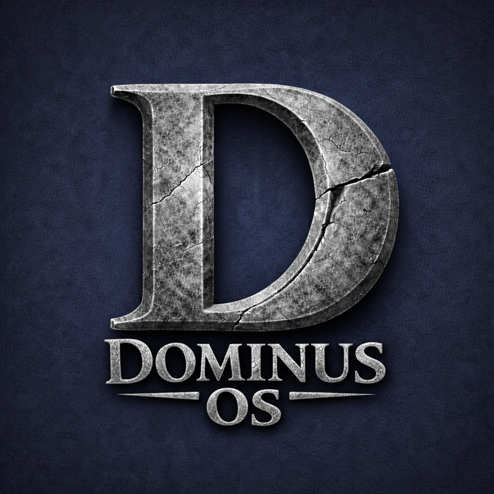

Bounded Authority
No process can exceed approved scope. Boundaries are enforced by capability tokens, not configuration. Every process runs inside an explicit envelope defined by a named human steward. Authority is structural, not behavioral.

The Human-Governed AI Hypervisor
Dominus OS is a human-governed AI hypervisor — a control layer beneath AI execution where every action passes through a mandatory syscall gate, every capability is scoped and revocable, and every outcome traces to human authority. Built on a microkernel with event-sourced determinism and tenant isolation. Not another AI product. A governed learning platform where intelligence compounds under human authority. Designed for organizations where someone must always be able to explain what happened, why, and who approved it.

Three structural guarantees
No process can exceed approved scope. Boundaries are enforced by capability tokens, not configuration. Every process runs inside an explicit envelope defined by a named human steward. Authority is structural, not behavioral.
Every action traces to human authorization through an unbroken chain of attribution. Every record carries source, timestamp, evidence, and provenance. An auditor can reconstruct the full path from any outcome to the authority that sanctioned it.
The system observes, enforces, learns, and adapts — but improvement requires human consent. Audit feeds trust scoring. Cost anomalies trigger investigations. Knowledge confidence decays so stale patterns never poison decisions. Every proposed change is reviewable, reversible, and gated by explicit authority. Canon immutability ensures governance rules cannot be altered by any automated process. Intelligence compounds under governance, not outside it.
The Problem
Most AI tools force a choice between power and accountability. Either systems act too freely — creating legal, ethical, and operational risk — or they are locked down so tightly they cannot adapt to real work. As organizations scale AI, the cost of this gap is carried by operators and executives who must still answer for outcomes they did not directly control. The result is fragile automation, unclear responsibility, and growing resistance to adoption.
Most stacks can automate tasks. Almost none can prove what happened end-to-end, tie actions to outcomes, and keep authority intact while the system gets smarter. Monitoring tells you what happened. Only a governance layer — a hypervisor — can determine what is permitted to happen.
The Architecture
Dominus OS is a governed computing substrate built on a microkernel architecture. At its core, a mandatory syscall gate mediates all execution — no process writes, communicates, deploys, or commits resources without passing through this governance checkpoint. Capability-based authority ensures every process operates within an explicit envelope: scoped, time-bound, and granted by a named human steward. Event-sourced determinism captures every state change as an immutable, sequenced event, enabling full replay and audit of any execution path. In v1.1, every learning loop is closed — audit feeds trust, metering triggers cost anomaly detection, and the knowledge layer actively informs governance decisions with confidence-decayed intelligence.
Multiple Virtual Employees execute real work with real tools — email, CRM operations, document processing, compliance enforcement, operational intelligence — all within governed capability envelopes. A structured knowledge layer connects everything: decisions, projects, doctrine, contacts, and operational insights stored as versioned, graph-connected nodes with full provenance. Every subsystem feeds intelligence to every other subsystem through this shared knowledge graph. A signal detected in one domain surfaces in the next day’s operational briefing. The result is combinatorial: each new domain added multiplies the intelligence of every domain already connected.
The operator surface is a native macOS application built in Swift — not Electron, not a browser wrapper. A real desktop client connected to the kernel with live process visibility, tab-based task management, and direct kill authority. A companion iOS app extends operator reach to mobile. The structured knowledge layer includes an assembly surface — a block-based editing environment where decisions are modeled with rationale, projects carry lifecycle stages and exit criteria, and doctrine is weighted and version-controlled. The cognition surface of a governed operating system. One kernel, multiple governed surfaces, one knowledge graph.
Control Plane
Dominus OS gives the operator one surface to see what’s running, what’s queued, what changed, and what every process touched. Live status, run history, data provenance, and authority boundaries — all in one view. Not scattered across vendor dashboards. One control plane, one truth.
Every process registers on the process ledger or it does not run. Dozens of scheduled jobs execute autonomously under governance. Every write operation passes through the syscall gate — the mandatory governance checkpoint where the human governs and the system executes. The boundary is structural, not behavioral.
Kill Switch
Dominus OS enforces a system-level halt that stops all AI-driven execution across every subsystem. No silent continuation. No orphaned processes. Revocation cascades ensure that when authority is withdrawn, all derived capabilities are transitively and immediately revoked. The system fails safe — and the operator sees it happen in real time, with a full audit trail of what was stopped and why.
This is the guarantee that makes everything else trustworthy. If you cannot stop it, you do not govern it. Dominus OS makes halt authority a first-class structural capability — not a panic button buried in settings, but an architectural guarantee the operator holds at all times.
Authority Structure
Who It’s For
Dominus OS is built for operators, founders, and executives who cannot afford black boxes — and cannot afford to slow down to avoid them. It assumes that someone must always be able to explain what happened, why it happened, and who was responsible, regardless of which domain the action occurred in. Governance is not bolted on after the fact; it is enforced at the architectural level where execution occurs.
The Foundation
Most AI systems are designed to learn from you in ways that serve their creators. Dominus OS inverts this. Tenant isolation and capability-based authority make unauthorized data extraction structurally impossible — not because of a promise, but because the architecture does not permit it. Your data, your processes, your intelligence. Sovereign by design.
For people who must protect discretion, confidentiality, and fiduciary duty, this is not a feature. It is the reason to choose Dominus OS.
In Production
Dominus OS is not a proposal or a prototype. It is running in production — orchestrating business workflows, governed CRM operations, compliance enforcement, operational intelligence, and cross-domain coordination for a multi-domain service business. A structured knowledge layer unifies organizational memory across every domain — decisions, projects, doctrine, and operational knowledge stored as versioned nodes in a connected graph. Multiple Virtual Employees execute daily tasks with real tools across production-scale endpoints. Governed business workflows track leads, score engagement, enforce follow-up discipline, and detect stale data automatically. Numerous scheduled operations run autonomously under governance. An immutable event ledger captures every action with source, evidence, and full attribution chain. The operator assembly surface gives the human direct access to the knowledge graph — structured editing, decision modeling, and doctrine management. The governed learning engine improves weekly under explicit authority. The kill switch is tested regularly.
Version 1.1 closes every learning loop in the system — transforming passive telemetry into active, governed intelligence across six implementation waves and nineteen features, with zero breaking changes. The hypervisor architecture — syscall gate, capability-based authority, event-sourced determinism, tenant isolation, microkernel — is a deployable pattern. Any multi-domain operation that needs accountability, structured cognition, cross-domain intelligence, and AI governance can run a version of this. The architecture is designed for extension to IoT and autonomous edge environments — the syscall gate and capability model accommodate device-level authority grants, edge-local governance enforcement, and physical-world action mediation. The IoT extension layer is stubbed in the current architecture. AI governance today. Autonomous infrastructure tomorrow. The pattern scales. The philosophy does not compromise.
Competitive Landscape
Most organizations assemble a patchwork of tools that each solve one problem. None of them solve the governance problem.
Automation platforms connect systems — they move data between services. They do not enforce authority boundaries, maintain audit-grade provenance, or provide a single kill switch when something goes wrong. When AI agents run inside them, no one controls the scope.
Agent frameworks let AI call functions and produce outputs. Most lack hard authority boundaries, durable process identity, and the ability to trace any outcome to the human who approved it. When the agent drifts, no structural failsafe exists.
Traditional CRMs track activity and pipeline. They do not provide immutable ledgers, full-funnel attribution from origin action to closed deal, composite scoring with governed signals, or learning loops that improve under governance. History can be rewritten. The chain cannot be audited. Dominus OS includes a governed CRM where every record change passes through the same syscall gate as every other system action.
Knowledge and note tools store documents and databases. They do not enforce decision modeling, version-control doctrine, connect knowledge to execution outcomes, or distinguish between human-verified facts and AI-generated suggestions. Information goes in. Intelligence does not come out. Dominus OS includes a structured knowledge layer where every node is typed, versioned, connected, and governed.
Observability dashboards show you what happened. They do not control what is allowed to happen next. They observe — they do not govern.
Dominus OS operates at the hypervisor layer — beneath execution, above infrastructure. A mandatory syscall gate, capability-based authority, event-sourced determinism, and structural kill authority. Execute, govern, prove, halt — in one system. Not bolted on. Architected in.
Founding Deployments
We are deploying Dominus OS with a small number of organizations — not to pilot governance, but to prove the pattern at scale. Founding partners receive hands-on deployment, direct architectural input, and favorable terms. If you are responsible for outcomes, oversight, or the future of intelligent systems in your organization, we should speak.